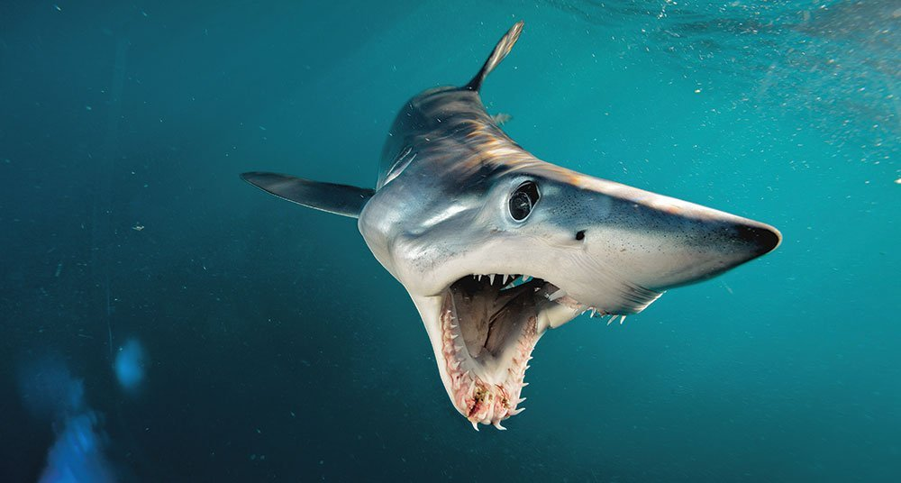

El tiburón mako, marrajo común o de aleta corta (Isurus oxyrinchus) es una especie de elasmobranquio lamniforme de la familia Lamnidae. Puede medir entre 3,5 y 4 metros de longitud. Tiene una distribución muy amplia: se encuentra en el océano Pacífico, Atlántico, Índico, mar Mediterráneo y Mar Caribe mar Rojo. Se considera que está en peligro de extinción, por sobrepesca. Considerado globalmente vulnerable de extinción (IUCN 2014), este tiburón ha estado sujeto a niveles elevados de mortalidad por pesca en el Atlántico Norte, y se estima, con base en un análisis de modelaje demográfico, que su abundancia se ha reducido entre 20 y 80 % (Kyne et al. 2012). Los datos históricos de captura en la pesquería palangrera industrial venezolana muestran una caída paulatina de los números a lo largo de los últimos años (Tavares y Arocha 2008, Arocha et al. 2013). Debido a la vulnerabilidad de sus poblaciones, la Comisión Internacional para la Conservación del Atún Atlántico ha instado a las naciones contratantes a que realicen esfuerzos que contribuyan a reducir sus niveles de mortalidad por pesca.
Se alimenta de una amplia gama de peces pelágicos (sardinas, caballas, bonitos y salmones entre muchos otros). Los jóvenes y medianos también comen cefalópodos y pequeños crustá- ceos.
Los tiburones marrajo de aleta corta viven cerca de la superficie en océanos tropicales y templados. Los juveniles son comunes en aguas costeras y los adultos se encuentran principalmente en alta mar. Son altamente migratorios y capaces de nadar largas distancias a través de océanos enteros.
El mako de aleta corta actualmente está clasificado como «en peligro» por la UICN, según actualización de noviembre de 2018. La especie está siendo afectada por la pesca deportiva y comercial, y existe una proporción sustancial de captura incidental en las pesquerías con redes de deriva para otras especies.[6] En junio de 2018, el Departamento de Conservación de Nueva Zelanda clasificó al tiburón mako de aleta corta como «no amenazado» con el calificativo «incierto de estar seguro en el extranjero» según el sistema de clasificación de amenazas de Nueva Zelanda.